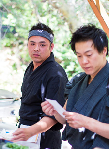

TAKKEN is a delicious fusion of Japanese and Vietnamese culinary traditions. The up and coming food catering company was conceived by Takuma Fumoto and Kenneth Nguyen. With Takuma's 15 years of experience as a chef, and Kenneth's original meat recipes, your palette will be delighted by the extraordinary flavors and beautiful aesthetic of TAKKEN.